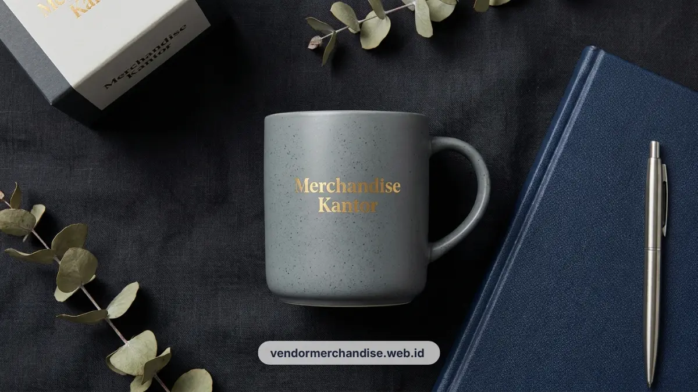

Mug keramik custom desain untuk perusahaan di Bandung tersedia dalam berbagai pilihan warna dan teknik cetak, cocok dijadikan gift klien maupun merchandise harian karyawan di meja kerja.
Kenapa Mug Keramik Masih Relevan sebagai Merchandise Kantor
Mug keramik masih relevan sebagai merchandise kantor karena dipakai setiap hari di meja kerja, sehingga logo perusahaan pada mug terlihat berulang kali oleh karyawan maupun tamu yang berkunjung.
Berbeda dengan merchandise yang hanya dipakai sesekali, mug custom logo cenderung menjadi barang harian, terutama saat dipakai untuk kopi atau teh di pagi hari sebelum memulai pekerjaan.
Kebiasaan ini membuat mug menjadi salah satu merchandise dengan tingkat keterlihatan logo paling tinggi dibandingkan merchandise lain, terutama jika mug diletakkan di meja kerja karyawan atau ruang tamu kantor.
Untuk perusahaan yang ingin memperkuat identitas visual secara konsisten, mug custom logo menjadi pilihan yang praktis dan tidak memerlukan momen khusus untuk digunakan.
Pilihan Produk Mug Keramik Custom Desain untuk Kantor
Berikut beberapa pilihan mug keramik custom desain yang umum dipesan perusahaan untuk kebutuhan gift karyawan maupun klien:
- Mug keramik putih polos dengan cetak logo satu warna, pilihan paling ekonomis untuk pesanan jumlah besar.
- Mug keramik warna solid dengan logo full color, cocok untuk kesan brand yang lebih berani.
- Mug keramik dengan pegangan warna kontras, memberi sentuhan visual tambahan pada desain logo.
- Mug keramik magic mug yang berubah warna saat terkena panas, sering dipilih untuk gift klien atau kampanye khusus.
- Set mug keramik dengan tatakan custom logo, cocok untuk gift bundling meja kerja.

Setiap pilihan dapat disesuaikan dengan warna, bentuk pegangan, dan posisi logo sesuai identitas visual perusahaan.
Pilihan Desain dan Warna Mug Keramik untuk Identitas Brand
Warna dan desain mug keramik sebaiknya disesuaikan dengan identitas visual brand agar merchandise tetap konsisten dengan citra perusahaan saat dipakai karyawan maupun klien.
Beberapa pendekatan desain yang umum dipakai:
- Logo tunggal di bagian depan mug dengan warna dasar mug senada dengan warna brand.
- Pola garis atau elemen grafis minimalis di sekeliling mug untuk memperkuat identitas visual.
- Kombinasi warna mug dan warna cetak yang kontras agar logo lebih mudah terlihat dari jarak tertentu.
- Tambahan tagline singkat perusahaan atau nama program tertentu, seperti program penghargaan karyawan.
Pemilihan warna dan desain yang konsisten dengan brand guideline membantu mug menjadi bagian dari strategi branding jangka panjang, bukan sekadar merchandise satu kali pakai.
Teknik Cetak yang Tahan Lama untuk Mug Keramik Custom
Teknik cetak sublimasi dan cetak digital ceramic dikenal sebagai metode yang menghasilkan logo tahan lama pada mug keramik meski dipakai dan dicuci berulang kali.
Beberapa hal yang perlu dipertimbangkan terkait teknik cetak:
- Sublimasi cocok untuk desain full color dengan gradasi warna yang halus.
- Cetak digital ceramic menghasilkan detail logo yang tajam dan tahan terhadap pencucian rutin.
- Proses pembakaran suhu tinggi pada tahap akhir produksi membantu hasil cetak menyatu dengan permukaan keramik.
- Pemilihan teknik cetak sebaiknya disesuaikan dengan tingkat kerumitan logo dan anggaran produksi perusahaan.
Dengan teknik cetak yang tepat, logo pada mug tetap terlihat jelas meski dipakai setiap hari dalam jangka waktu panjang.
Kombinasi Mug Keramik dengan Kemasan Gift Box untuk Klien
Mug keramik yang dikemas dalam gift box memberikan kesan lebih premium dan cocok dijadikan gift khusus untuk klien atau tamu penting perusahaan.
Beberapa kombinasi kemasan yang umum dipakai:
- Gift box polos dengan stiker logo perusahaan di bagian luar kemasan.
- Gift box custom cetak logo penuh untuk kesan yang lebih eksklusif.
- Kombinasi mug dengan kartu ucapan singkat dari perusahaan di dalam gift box.
- Paket bundling mug bersama notes atau pulpen dalam satu gift box untuk kebutuhan meeting dengan klien.
Kemasan yang rapi membantu meningkatkan kesan profesional saat mug diberikan langsung kepada klien atau mitra bisnis perusahaan, seiring dengan melihat ragam koleksi souvenir kantor custom terlengkap kami.

Pesan Mug Keramik Custom Desain untuk Perusahaan Anda
Tim Vendor Merchandise Kantor melayani pemesanan mug keramik custom desain dengan berbagai pilihan warna, teknik cetak, dan kemasan gift box sesuai kebutuhan perusahaan Anda di Bandung.
Hubungi Vendor Merchandise Kantor sekarang untuk konsultasi desain mug dan estimasi jumlah pesanan.